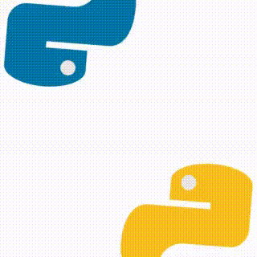

3. Tipos de variables en Python.#
Puedes descargar el cuaderno que se usó para generar esta página dando clic aquí..

En Python los siguientes tipos de variables son los más usados:
int: Los enteros usuales, en Python pueden ser tan grandes como se quiera a diferencia de otros lenguajes.float: Números decimales (con punto flotante).string: Secuencias de caracteres para guardar texto. Se pueden definir con:comillas sencillas
'hola'.comillas dobles
"hola".triples comillas
'''hola'''(esta forma permite tener saltos de línea).
list: Colección ordenada de elementos que es mutable (modificable) y heterogénea (puede tener diferentes tipos).tuple: Colección ordenada de elementos que es inmutable.dict: Colección no ordenada de pares llave valor. Eficiencia en la búsqueda de llaves.set: Colección no ordenada de elementos únicos.bool: Booleanos representan valores de verdad; es decirTrueoFalse. Son usados para controlar el flujo del programa.NoneType: Para representar la ausencia de un valor o un valor nulo, se escribe comoNone.
Recordatorio
Para ejecutar una celda den click en el botón de “play” o tecleen ctrl + enter para permanecer en la celda o shift + enter para ir a la siguiente celda.
3.1. Comentarios#
Primero mostraremos como poner comentarios en el código.
#Esto es un comentario
'''
Todo lo que se ponga aquí
será considerado como
un comentario dentro
de la celda
'''
'\nTodo lo que se ponga aquí\nserá considerado como\nun comentario dentro\nde la celda\n'
3.2. Enteros#
# int: enteros
int_ejemplo = 2
print('La variable int_ejemplo contiene al número',int_ejemplo,' y es de tipo', type(int_ejemplo))
# Se pueden separar por guión bajo para facilitar nuestra lectura sin cambiar su valor
print(1_000_000) # es lo mismo que print(1000000)
La variable int_ejemplo contiene al número 2 y es de tipo <class 'int'>
1000000
3.3. Flotantes#
# float: racionales
float_ej = 2.0
print('La variable float_ej contiene al número',float_ej,' y es de tipo', type(float_ej))
# El resultado de multiplicar un entero por un float es un float aunque el float tenga el valor de un entero
print(float_ej*int_ejemplo)
La variable float_ej contiene al número 2.0 y es de tipo <class 'float'>
4.0
3.4. Listas#
# lists: listas; pueden tener más de un tipo, además son mutables
lista_ej = [1, 2, 3, "a", 2.3]
print('La variable lista_ej almacena el valor', lista_ej, 'y pertenece a la clase', type(lista_ej))
# Para acceder a un elemento de la lista se le coloca en corchetes su posición o índice
# Los índices en python comienzan en cero
print(lista_ej[0],lista_ej[3])
# Se pueden hacer rebanadas o slices de las listas
print(lista_ej[:3]) # Devuelve del elemento con índice 0 hasta el de índice 2
print(lista_ej[:5:2]) # Devuelve del elemento 0 al 5, pero en saltos de 2 en 2
print(lista_ej[::-1]) # Devuelve en un paso negativo (volteala)
print(lista_ej[:-2]) # Devuelve todos menos dos elementos del final
print(lista_ej+[0,1,1]) # Agrega las listas en una sola
print(len(lista_ej)) # se puede obtener la longitud de la lista
# Podemos agregar elementos al final de la lista con la función append
print('Agregamos el elemento', 180, ' a la lista')
lista_ej.append(180)
print(lista_ej)
# Podemos quitar elementos del final de la lista con la función pop
print('Quitamos el último elemento', lista_ej[-1], ' a la lista')
print(lista_ej.pop()) # Esta función devuelve el valor del último elemento
print(lista_ej)
# Se puede buscar un valor dentro de la lista
print(lista_ej.index(2)) # Esto nos dice que el elemento 2 está en el índice 1
# Si no lo encuentra entonces regresará un error
La variable lista_ej almacena el valor [1, 2, 3, 'a', 2.3] y pertenece a la clase <class 'list'>
1 a
[1, 2, 3]
[1, 3, 2.3]
[2.3, 'a', 3, 2, 1]
[1, 2, 3]
[1, 2, 3, 'a', 2.3, 0, 1, 1]
5
Agregamos el elemento 180 a la lista
[1, 2, 3, 'a', 2.3, 180]
Quitamos el último elemento 180 a la lista
180
[1, 2, 3, 'a', 2.3]
1
3.5. Tuplas#
# tuples: tuplas; pueden tener más de un tipo, pero son inmutables
tupla_ej = (1, 2, "a")
print('La variable tupla_ej almacena el valor', tupla_ej, 'y pertenece a la clase', type(tupla_ej))
# Si intentamos modificar algún elemento, como es inmutable, regresará un error
try:
tupla_ej[0]=2
except:
print('No se puede modificar el valor de la tupla')
La variable tupla_ej almacena el valor (1, 2, 'a') y pertenece a la clase <class 'tuple'>
No se puede modificar el valor de la tupla
3.6. Cadena (string)#
# str: strings
string_ej = "Los strings almacenan lenguaje humano"
print('La variable string_ej contiene a la cadena',string_ej,' y es de tipo', type(string_ej))
# La operación de + concatena dos cadenas, es decir las une
print(string_ej + ' or not')
# Se pueden hacer slices al igual que a las listas
print(string_ej[:7]) # Se mira la cadena desde el índice 0 hasta el 6
# Se pueden poner al revés
print(string_ej[::-1])
# Al especificar un número negativo hace que vaya hasta el elemento con posición 5ta del final
print(string_ej[:-5])
# Existen muchos métodos para la manipulación de cadenas, por ejemplo:
print(string_ej.capitalize())
print(string_ej.upper())
print(string_ej.lower())
print(string_ej.startswith('Lo'))
print(string_ej.startswith('a'))
print(string_ej.endswith('a'))
print(string_ej.endswith('mano'))
# Si quieren hacer una operación de búsqueda compleja en cadenas vean el tema de las expresiones regulares
La variable string_ej contiene a la cadena Los strings almacenan lenguaje humano y es de tipo <class 'str'>
Los strings almacenan lenguaje humano or not
Los str
onamuh ejaugnel nanecamla sgnirts soL
Los strings almacenan lenguaje h
Los strings almacenan lenguaje humano
LOS STRINGS ALMACENAN LENGUAJE HUMANO
los strings almacenan lenguaje humano
True
False
False
True
# Para separar una cadena en una lista se usa el método split
string_ej = "Los strings almacenan lenguaje humano"
string_ej_split = string_ej.split(' ')
string_ej_split
['Los', 'strings', 'almacenan', 'lenguaje', 'humano']
Para hacer saltos de línea se puede usar un carácter o la notación de tres comillas.
# El carácter \n representa un salto de línea
print('Salto\nde\nlínea')
# strings con salto de línea integrado
string_ej_nl = '''Los strings almacenan
lenguaje humano'''
print(string_ej_nl)
print('Pertenecen a la misma clase: ', type(string_ej_nl))
Salto
de
línea
Los strings almacenan
lenguaje humano
Pertenecen a la misma clase: <class 'str'>
# Las fstrings (formatted string) nos permiten escribir variables adentro de una string sin estar concatenando
fstr_ej=f'La lista {lista_ej} tenía {len(lista_ej)} de elementos'
print(fstr_ej)
La lista [1, 2, 3, 'a', 2.3] tenía 5 de elementos
3.7. Conjuntos#
# sets: conjuntos; se le tiene que pasar un iterable (lista)
set_ej = set([1, 2, 3, 1])
print('La variable set_ej almacena el valor', set_ej, 'y pertenece a la clase', type(set_ej))
print(set_ej) # Vemos como el conjunto no tiene dos 1's como tenía la lista con la que se creó
set_ej2=set([3,4,5])
print(set_ej -set_ej2) # Se pueden hacer operaciones de conjuntos en este caso la diferencia
print(set_ej.union(set_ej2)) #union
print(set_ej.intersection(set_ej2)) #intersección
La variable set_ej almacena el valor {1, 2, 3} y pertenece a la clase <class 'set'>
{1, 2, 3}
{1, 2}
{1, 2, 3, 4, 5}
{3}
3.8. Diccionarios#
# dict: diccionarios. También conocidos como hash maps, objetos
dict_ej = {1: "a", "a": 0,0:'b'}
print('La variable dict_ej almacena el valor', dict_ej, 'y pertenece a la clase', type(dict_ej))
# Para encontrar el valor correspondiente a la llave se pone dicc[key]
print(dict_ej[1])
# Se puede reasignar una llave
dict_ej[1]=3
print(dict_ej)
# Puede tener cualquier objeto inmutable como llave y cualquier objeto en general como valor, incluso otro diccionario
# Para asignar un valor a una nueva llave sólo se escribe el nombre de la llave
dict_ej[(1,1)]={'a':set([8,9])}
print(dict_ej)
La variable dict_ej almacena el valor {1: 'a', 'a': 0, 0: 'b'} y pertenece a la clase <class 'dict'>
a
{1: 3, 'a': 0, 0: 'b'}
{1: 3, 'a': 0, 0: 'b', (1, 1): {'a': {8, 9}}}
3.9. Booleanos#
# Booleanos
bool_ej = False
print('La variable bool_ej almacena el valor', bool_ej, 'y pertenece a la clase', type(bool_ej))
# Las expresiones de comparación devuelven booleanos
print(1==1) # Son iguales
print(1>1) # mayor
print(1<=1) # menor o igual
# Se pueden combinar para hacer proposiciones más complejas con or y and
bool_ej2 = True
print(bool_ej and bool_ej2)
print(bool_ej or bool_ej2)
# Es posible formular proposiciones aún más complicadas, esto da pie a ambigüedades en la priorización en las reglas de asociación
#y caer en escenarios no contemplados, para solucionar esto se recomienda el uso de paréntesis para agrupar cada operación lógica
print('Vemos problemas de asociatividad:')
print( bool_ej or 1==2 and bool_ej2)
print( bool_ej2 or (1==2 and bool_ej2))
# La primera expresión dice False or True and True y es interpretada haciendo primero el or, mientras que la segunda lo agrupa distinto
La variable bool_ej almacena el valor False y pertenece a la clase <class 'bool'>
True
False
True
False
True
Vemos problemas de asociatividad:
False
True
Buenas prácticas
Nombrar a las variables de manera semántica para poder rastrear lo que hacen y poder seleccionar todas si es necesario.